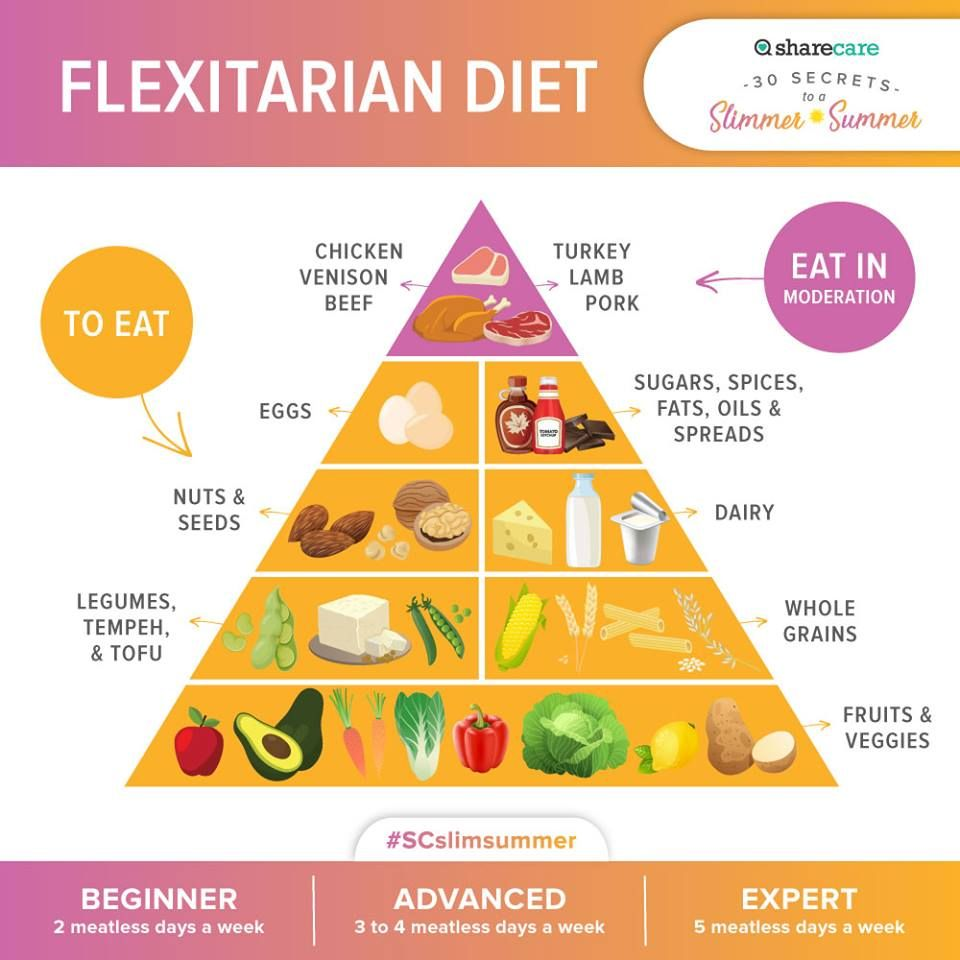

Flexitarian Diet:
Understanding the Flexitarian Diet
Welcome to the world of the Flexitarian diet—a deliciously
flexible way to eat that lets you savor plant-based foods while
still enjoying your favorite meats! If you're looking to improve
your health without completely cutting out your beloved burgers
and bacon, the Flexitarian diet is just for you. Let’s dive in and
explore how you can enjoy a healthier lifestyle while indulging in
a variety of delicious meals!
What is the Flexitarian Diet?
The Flexitarian diet is all about flexibility, making it easier to
embrace a predominantly plant-based diet while still allowing for
the occasional meat dish. It’s a blend of the words "flexible" and
"vegetarian," reflecting its core philosophy: eat mostly plants,
but don’t stress about it. The Flexitarian diet encourages you to
focus on whole, nutrient-rich foods while also providing the
freedom to enjoy meat in moderation.
Think of it as a way to dip your toes into the world of
vegetarianism without diving in headfirst. You can experiment with
new flavors and textures while still enjoying the comfort of your
favorite meals. Sounds liberating, right?
How Does the Flexitarian Diet Work?

The Flexitarian diet works by encouraging you to prioritize
plant-based foods—think fruits, vegetables, whole grains, nuts, and
seeds—while allowing for moderate amounts of meat, fish, and dairy.
This approach helps reduce your overall meat consumption while
boosting your intake of essential nutrients and fiber.
One of the best aspects of the Flexitarian diet is its adaptability.
You can customize it to suit your taste preferences, dietary
restrictions, and lifestyle, making it easy to follow and
sustainable in the long run. The goal is to nourish your body while
still enjoying food. After all, food should be a source of joy, not
stress!
Scheduling: How to Get Started with Flexitarian
Getting started on the Flexitarian diet is simple and enjoyable!
Here’s a straightforward guide to help you ease into this vibrant
way of eating:
-
1. Set Your Intentions: Decide why you want to
adopt the Flexitarian diet—whether it’s to improve health, lose
weight, or explore new foods.
-
2. Plan Your Meals: Create a weekly meal plan
focused on plant-based dishes. Include some of your favorite
meat-based meals to ease the transition.
-
3. Grocery Shopping: Stock up on fresh produce,
whole grains, legumes, and healthy snacks. Check out new
plant-based products that excite you!
-
4. Prep Your Meals: Meal prepping can save you
time during the week. Chop veggies, cook grains, and prepare
snacks in advance for quick access.
-
5. Mindful Eating: Enjoy each bite and pay
attention to how different foods make you feel. Savor the flavors
of plant-based dishes!
-
6. Track Your Progress: Log your daily meals here
on NourishWise. Keeping track of what you eat can help you stay
motivated and accountable, it also helps you notice any missteps
to be able to solve them early.
Foods You Can Eat on the Flexitarian Diet
Embrace a variety of delicious foods as part of your Flexitarian
journey:
-
1. Fruits and Vegetables: Aim for 5 or more
servings a day. Think berries, leafy greens, carrots, and colorful
bell peppers.
-
2. Whole Grains: Choose whole-grain bread,
quinoa, brown rice, and oatmeal. Aim for at least 3 servings
daily.
-
3. Plant-Based Proteins: Incorporate beans,
lentils, tofu, and tempeh as your primary sources of protein.
-
4. Nuts and Seeds: Snack on unsalted nuts and
seeds, aiming for about 4 servings per week.
-
5. Dairy Alternatives: Opt for low-fat dairy or
plant-based alternatives like almond milk or coconut yogurt.
-
6. Moderate Meat Consumption: Enjoy lean meats,
poultry, and fish occasionally—think 1-2 servings per week.
Foods to Limit or Avoid
While the Flexitarian diet is about enjoying a variety of foods,
here are some items you should limit:
-
1. Processed Foods: Cut back on sugary snacks,
processed meals, and high-calorie beverages.
-
2. Red and Processed Meats: Limit consumption of
these meats, focusing instead on lean proteins.
-
3. High-Sugar Foods: Avoid sweets and desserts
that offer little nutritional value.
Fun Tips to Enjoy the Flexitarian Diet
Here are some enjoyable ways to embrace the Flexitarian diet:
-
1. Experiment with New Recipes: Try your hand at
cooking plant-based versions of your favorite meals!
-
2. Join a Cooking Group: Collaborate with friends
or family to explore new recipes and techniques.
-
3. Make it Colorful: Aim for a colorful plate
filled with a variety of nutrients to keep meals interesting.
-
4. Try Meatless Mondays: Designate one day a week
to go fully meat-free as a fun challenge.
Conclusion
Embarking on the Flexitarian diet is a delightful journey toward
better health and a more balanced lifestyle. With its emphasis on
whole foods and flexible eating, the Flexitarian diet allows you to
enjoy a diverse array of meals while improving your overall
well-being.
So, what are you waiting for? Embrace the flexibility of the
Flexitarian diet, savor new flavors, and watch as you take
meaningful strides toward a healthier you. Remember, it’s all about
balance and enjoyment—so dig in and have fun along the way!